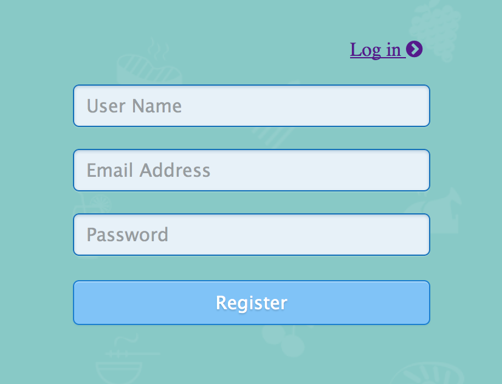

Description
MultiDBs INotebook Project is a sub-project for MultiDBs project. It aims to utilize iPython(Jupyter) notebook to do data analysis on MultiDBs datasets.
Install iPython
Installing IPython is the first step we should take. Here is simple introduction of several ways to install IPython. For more information, please visit Install IPython to get simplified installation instructions that should work for most of the users.
-
If you already have Python, you can get IPthon with pip
pip install ipythonOr if you want to also get the dependencies for the IPython notebook:
pip install "ipython[notebook]" -
For a new starter, you are suggested to get IPython with the Anaconda or Canopy Python distributions, which provide Python 2.7, IPython and all of its dependences as well as a complete set of open source packages for scientific computing and data science.
%%for Anaconda: conda update conda conda update ipython ipython-notebook ipython-qtconsole %%Enthought Canopy: enpkg ipython
Install Server and Configuration Alert
Note:All the following configuration is based on AWS(Ubuntu 14.04.1 LTS). There may be some configuration errors on other kinds of server system. You can always send emails to wuplus1992@gmail.com for technical support
There are two servers in our system: Java server for portal website and ipython server to deal with actual notebook staffs.
Before starting up the server, users need to make sure that the port 8888 is open to public, and is not binding to other process. It is reserved for jupyter server.
The first part of installation is to install mysql server, with password root for user root, it should automatically set “root” as password of “root” mysql user. If it fails, you should try to replace the password with your own.
echo mysql-server mysql-server/root_password password root | sudo debconf-set-selections
echo mysql-server mysql-server/root_password_again password root | sudo debconf-set-selections
The second part of installation is install java server. System will download server from git, make some configuration, and start server. In “Jupyter Notebook for multi-user”, we install jupyter server which is a multi-user version of ipython.
In this part, the server will use a default port 7654. If you want to change it to another port, please refer to config.properties file and change the port in the first line
The last part is to modify some ipython build-in files to implement some customize functionalities. You can change the defalut ipython path to your own one if your ipythn is not installed in the default directory
# Copy jupyter server configuration file from git
# Replace the IPython directory with your own one
cp opt/project/MultiDBs-INotebook-IPython-Extention/js/main.js /usr/local/lib/python3.4/dist-packages/IPython/html/static/notebook/js/main.js
cp opt/project/MultiDBs-INotebook-IPython-Extention/css/overiride.css /usr/local/lib/python3.4/dist-packages/IPython/html/static/notebook/css/overiride.css
After setting all the configuration in the startup.sh, just start up the server in a clean machine, run startup.sh in the project directory.
sudo ./startup.sh
How to use
- Register a new account
- Log in
- Open your server
- Create new documents
- Connect to a database
- Use data from database
Open the Rigister page. Input your user name, email address and password.
Open the Log in page. Input the user name and password in step 1. Or use the defualt account (username: student, password: infsci27115).
When you enter the Jupyterhub page, click the green My Server button. The page will jump to your home page that lists all your files.
Click the New button on the right part of the page and select a file type. For this project, you should create Python 3.
Select a database in the pull-down menu to connect. Then click the cloud button next to the database menu. The first cell will display the database information.
Now, you can start to use the data to do analysis. For example, if you want to get the data of two columns "mpg" and "horsepower" from database "car". you can execute a SQL statement select horsepower, mpg from 25.carsin notebook cell. Than you will get the data from the databse. The data is displayed in the form of JSON object.
You can uniform the data to discard schema and to convert data type using Python. The following code gives an example of data pre-processing and scatter plot.
%matplotlib inline
import matplotlib.pyplot as plt
data=data0['data']
dataset1=[]
dataset2=[]
for i in range(len(data)):
dataset1.insert(i,int(data[i]['row'][0]))
for i in range(len(data)):
dataset2.insert(i,int(data[i]['row'][1]))
x = dataset1
y = dataset2
plt.scatter(x,y)
plt.show()
APIs
- To register a new user in iPython Notebook, the API is:
Path: http://54.152.29.103:7654/User
Method: PUT
JSON: {"username": "myName", "email": "myEmail", "password": "password"}
Return Type: "1" - success; "-1" - failure.
Acknowledge
Thanks for all the advice and help from Evgeny Karataev, the teacher for INFSCI2711.